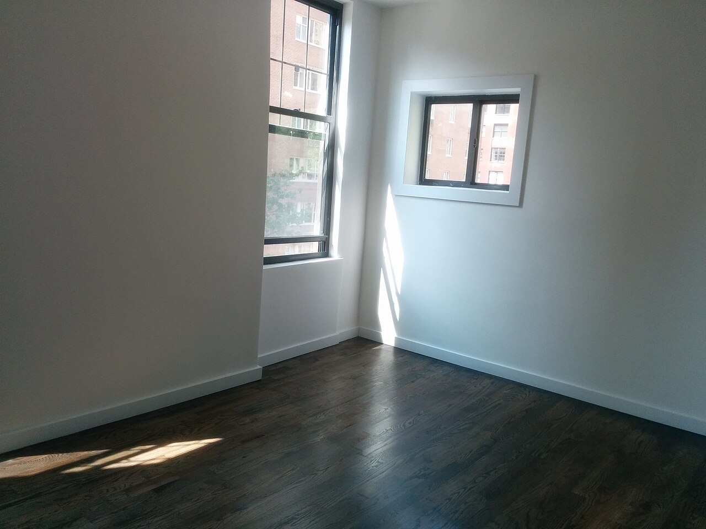

初めてのお店で少し緊張していましたが、髪のことを気軽に話せて、肩の力が抜けました。聞きたかったことも遠慮なく聞けて、帰るころには相談してよかったと思えました。
以下は実際のお客様の声ではないイメージ例です。実際の口コミは準備中です。
口コミ

仕上がったあと、自分で整えるときも扱いやすく感じました。毎朝の支度が少し楽になって、鏡を見るのが前より楽しみになりました。また髪のことで迷ったら、相談したいなと思います。
椅子に座っている時間が、ゆっくり流れているようでした。忙しい日常から少し離れて、落ち着いて過ごせたのが嬉しかったです。ふらりと立ち寄りたくなる時間でした。
実際のお客様の声を見るには
最新の様子や実際のお客様の声は、Instagramでご覧いただけます。ご来店いただいた方の声は、準備でき次第掲載します。